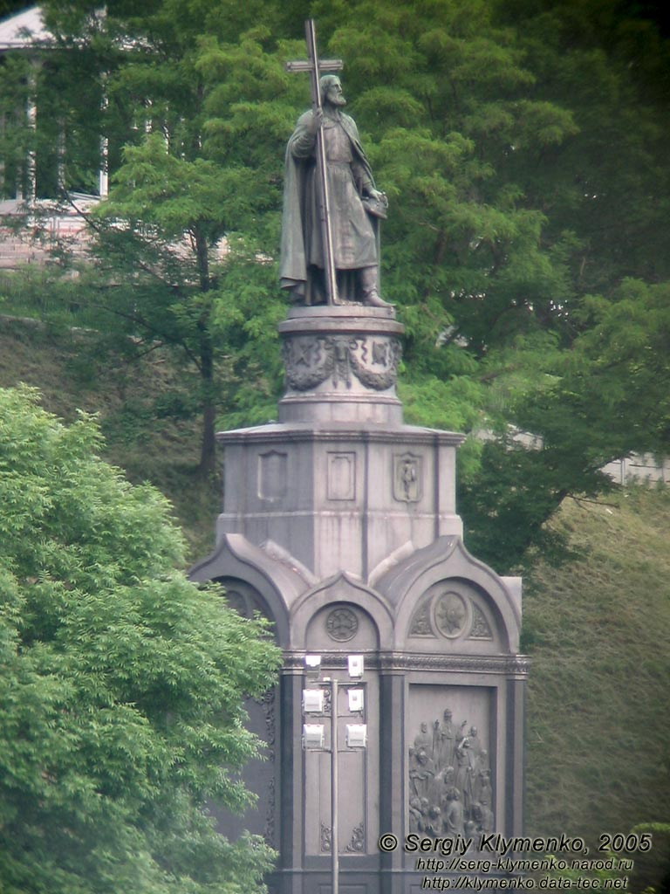

Vladimir's Hill is one of most fascinfting and popular parks of Kyiv, that were built in hte middle of a XIX century.

Park stay on top and middle terraces of Michael's Hill.Top part this hill was occupied Iziaslav's and Michael's Golden-Domed Monastery buildings.. In 1830 park projecting was started.
In 1853 on west part of Vladimir's Hill was built monument to King Vladimir, since then east part of hill and park named "Vladimir's Hill".
 Besides monument in park are two summerhouses and small park sculpture. In north part of park stay funikular, in south part- Ukrainian house. In park people like walk in all seasons. View is pleasant in all time of seasons and day. Park has many place, paths and steps.Addresses : c.Kiev , Trohsvyatitelska street 8A , m.st.Poshtova Ploscha .